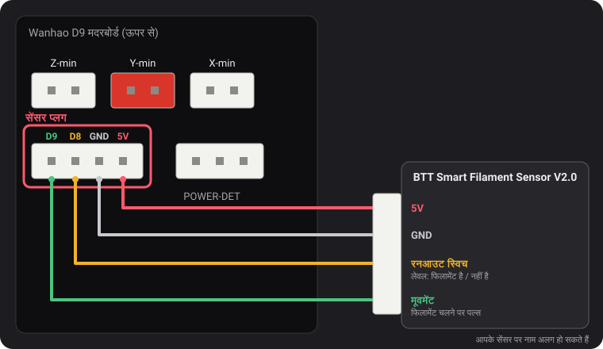
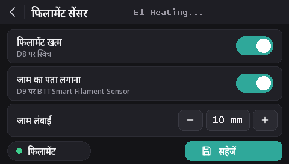

फिलामेंट सेंसर
v2.0.5 से ये फ़र्मवेयर दो तरह के सेंसर पढ़ते हैं: Wanhao का रनआउट स्विच, और BTT Smart Filament Sensor V2.0, जो यह भी पकड़ लेता है कि फिलामेंट आगे बढ़ना बंद हो गया है (स्पूल उलझ गया, जाम, घिसा हुआ फिलामेंट)। रनआउट डिटेक्शन हर मॉडल पर डिफ़ॉल्ट रूप से चालू है, और जाम डिटेक्शन बंद है।
सेंसर प्लग

POWER-DET के बाईं ओर, एंडस्टॉप प्लगों के नीचे वाले 4-पिन प्लग पर इसी क्रम में D9, D8, GND और 5V हैं। पिन के नाम Wanhao के एक वायरिंग डायग्राम से लिए गए हैं, जिसे dustovich ने ढूँढकर Discord पर शेयर किया; बोर्ड के पीछे इन्हीं चार पिनों पर CTRL, BTN, GND और VCC छपा है।
- D8 वह रनआउट इनपुट है जिसे Wanhao का अपना फ़र्मवेयर पढ़ता है।
- D9 Wanhao का फ़र्मवेयर इस्तेमाल नहीं करता: ये बिल्ड इस पर BTT सेंसर का मूवमेंट सिग्नल पढ़ते हैं।
स्क्रीन पर
स्क्रीन पर DGUS Reloaded 2.0 हो (फ़र्मवेयर v2.0.9 या नया): सेटिंग्स → फिलामेंट → फिलामेंट सेंसर।
- फिलामेंट खत्म पूरा डिटेक्शन चालू या बंद करता है,
M412 S1/M412 S0की तरह। - जाम का पता लगाना नीचे दी गई लंबाई के साथ जाम डिटेक्शन चालू करता है, या उसे बंद करता है (
L0)। - जाम लंबाई: − और + इसे 1 mm बदलते हैं; टाइप करने के लिए नंबर पर टैप करें।
- फिलामेंट वाला बिंदु हरा रहता है जब रनआउट स्विच को फिलामेंट दिखता है, और लाल जब नहीं दिखता।
- बदलाव तुरंत लागू होते हैं। सहेजें उन्हें सेव करता है,
M500की तरह। पीछे वाला तीर बिना सेव किए बाहर निकलता है: अगली बार चालू करने पर सेव की हुई सेटिंग्स लौट आती हैं।

M412 कमांड
सब कुछ USB से सीरियल टर्मिनल में सेट होता है (Pronterface, आपके स्लाइसर या OctoPrint का टर्मिनल,
250000 बॉड)। एक ही कमांड में कई पैरामीटर जोड़े जा सकते हैं, जैसे M412 S1 L10।
| कमांड | क्या करता है |
|---|---|
M412 | स्थिति दिखाता है, जैसे Filament runout ON ; Distance 5.00mm ; Motion distance 0.00mm। |
M412 S1 | डिटेक्शन चालू करता है: रनआउट स्विच, और अगर जाम लंबाई 0 नहीं है तो जाम डिटेक्शन भी। |
M412 S0 | पूरा डिटेक्शन बंद करता है, स्विच और जाम दोनों। |
M412 D5 | स्विच को फिलामेंट न दिखने के बाद, रुकने से पहले 5 mm और प्रिंट करता है, ताकि सेंसर और नोज़ल के बीच बचा फिलामेंट इस्तेमाल हो जाए। डिफ़ॉल्ट 5 mm। |
M412 L10 | जाम डिटेक्शन चालू करता है (सिर्फ़ BTT सेंसर): अगर सेंसर का पहिया घूमे बिना एक्सट्रूडर से 10 mm फिलामेंट निकल जाए, तो प्रिंट रोक देता है। |
M412 L0 | जाम डिटेक्शन बंद करता है और रनआउट स्विच को जैसा है वैसा छोड़ देता है। यही डिफ़ॉल्ट है। |
M500 | सेटिंग्स सेव करता है। इसके बिना, प्रिंटर बंद होने पर बदलाव खो जाता है। |
M119 | filament लाइन में फिलामेंट लगा हो तो TRIGGERED, न हो तो open आता है। |
M412 L0, और अकेला L, Marlin में हमारे बदलाव से आते हैं
(MarlinFirmware/Marlin#28585), जो इन फ़र्मवेयर में शामिल है। इसके बिना वाले Marlin में अकेला L
अनदेखा हो जाता है और L0 तुरंत प्रिंट को जाम मानकर रोक देता है।
Wanhao का रनआउट स्विच
यह फ़र्मवेयर को बताता है कि फिलामेंट है या नहीं। फिलामेंट खत्म होने पर, 5 mm और फिलामेंट के बाद प्रिंट रुक जाता है और स्क्रीन फिलामेंट बदलने की प्रक्रिया शुरू करती है।
v2.0.8 से यह हर मॉडल पर डिफ़ॉल्ट रूप से चालू है। D8 में कुछ न लगा हो तो बोर्ड का पुल-अप पिन को 5 V पर रखता है, जिसे “फिलामेंट मौजूद है” पढ़ा जाता है: तब डिटेक्शन कभी ट्रिगर नहीं होता, इसलिए सेंसर लगा हो या न हो, इसे चालू रखा जा सकता है। D8 में रनआउट स्विच लगाइए और वह तुरंत काम करने लगेगा।
- जाम डिटेक्शन बंद ही रहता है (
L0): यह स्विच फिलामेंट का चलना नहीं देख सकता। - स्विच बंद करने के लिए:
M412 S0फिरM500। - किसी पुरानी रिलीज़ से सेव की गई सेटिंग्स अपनी चालू/बंद स्थिति बनाए रखती हैं। चालू करने के लिए:
M412 S1फिरM500, या डिफ़ॉल्ट पर रीसेट करें (M502फिरM500, जिससे आपका प्रोब Z ऑफ़सेट और मेश भी मिट जाते हैं)।
BTT Smart Filament Sensor V2.0
इस सेंसर के दो आउटपुट हैं, और फ़र्मवेयर उन्हें अलग-अलग तरह से पढ़ता है:
- रनआउट स्विच (D8 पर) एक लेवल देता है: फिलामेंट रहने तक 5 V, खत्म होते ही 0 V।
- मूवमेंट आउटपुट (D9 पर) एक छोटे पहिये से आता है जिसे गुज़रता हुआ फिलामेंट घुमाता है। हर कुछ मिलीमीटर फिलामेंट पर आउटपुट 0 V और 5 V के बीच पलटता है। फ़र्मवेयर सिर्फ़ इन बदलावों पर नज़र रखता है: अगर एक्सट्रूडर जाम लंबाई जितना फिलामेंट धकेल दे और एक भी बदलाव न हो, तो फिलामेंट साथ नहीं चल रहा (स्पूल उलझ गया, जाम, घिसा हुआ फिलामेंट), और प्रिंट रुक जाता है। रनआउट स्विच यह नहीं देख सकता: जाम के दौरान फिलामेंट तो मौजूद ही रहता है।
वायरिंग
5V को 5V से, GND को GND से, रनआउट स्विच का सिग्नल D8 से और मूवमेंट सिग्नल D9 से जोड़ें। सेंसर की केबल पर छपे नाम अलग हो सकते हैं।
चालू करना
M412 S1 L10
M500अगर प्रिंट बिना वजह रुकते हैं, तो जाम लंबाई बढ़ाएँ: M412 L15 फिर M500। सिर्फ़
रनआउट स्विच रखने के लिए: M412 L0 फिर M500।
जाँच करना
M412: Filament runout ON ; Distance 5.00mm ; Motion distance 10.00mm।- फिलामेंट लगा होने पर
M119: filament: TRIGGERED। अगर यह लाइन फिलामेंट डालने या निकालने पर नहीं, बल्कि हाथ से फिलामेंट धकेलने पर बदलती है, तो दोनों सिग्नल तार आपस में बदल गए हैं: D8 और D9 की अदला-बदली करें।
L0 कभी
नहीं), लेकिन अभी खुद BTT सेंसर के साथ नहीं। अगर स्विच उल्टा पढ़ता है (फिलामेंट लगा होने पर open),
तो हमें Discord पर बताएँ।v2.0.5 या v2.0.6 से अपडेट करना
उन रिलीज़ में जाम डिटेक्शन बंद करने का कोई तरीका नहीं था, इसलिए उनमें इतनी लंबी जाम लंबाई रखी गई थी कि वह कभी पूरी न हो: v2.0.5 में
100 m (असल में यह कम थी: 1 kg स्पूल का लगभग एक-तिहाई, जिसके बाद चालू छोड़ा गया प्रिंटर बेवजह रुक सकता था) और
v2.0.6 में 10 km। प्रिंटर चालू होने पर v2.0.7 इन दोनों वैल्यू को L0 के रूप में लोड करता है। BTT सेंसर के लिए
आपकी सेट की हुई असली लंबाई, जैसे L10, बनी रहती है। v2.0.4 या उससे पुराने वर्ज़न से आने पर, उन वर्ज़न की सेव की हुई 0 की जगह
5 mm की रनआउट दूरी लोड होती है।